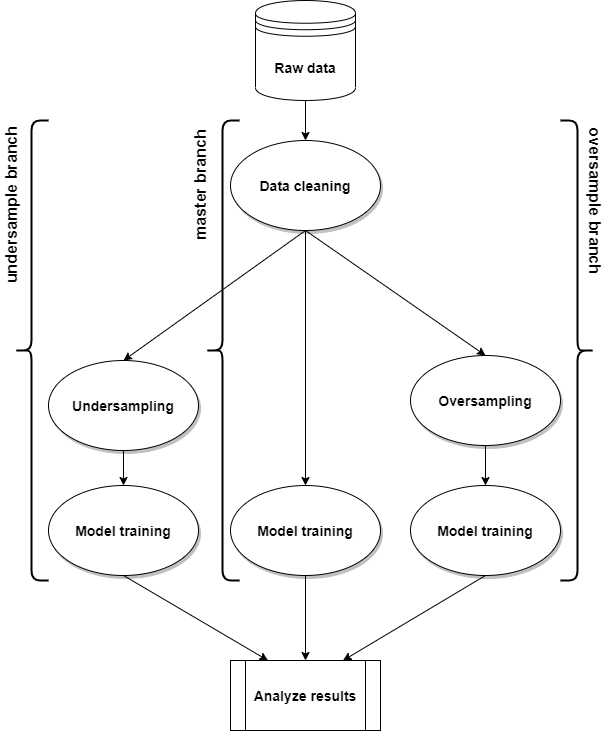

Data management
Data sets
ATOM is designed to work around one single dataset: the one with which atom is initialized. This is the dataset you want to explore, transform, and use for model training and validation. ATOM differentiates three different data sets:
- The training set is usually the largest of the data sets. As the
name suggests, this set is used to train the pipeline. During
hyperparameter tuning, only the training set is used to fit and
evaluate the estimator in every call. The training set in the current
branch can be accessed through the
trainattribute. It's features and target can be accessed throughX_trainandy_trainrespectively. - The test set is used to evaluate the models. The model scores on
this set give an indication on how the model performs on new data. The
test set can be accessed through the
testattribute. It's features and target can be accessed throughX_testandy_testrespectively. - The holdout set is an optional, separate set that should only be
used to evaluate the final model's performance. Create this set when
you are going to use the test set for an intermediate validation step.
The holdout set is immediately set apart during initialization and is
not considered part of atom's dataset (the
datasetattribute only returns the train and test sets). The holdout set is left untouched until predictions are made on it, i.e. it does not undergo any pipeline transformations. The holdout set is stored in atom'sholdoutattribute. It's features and target can not be accessed separately. See here an example that shows how to use the holdout data set.
The data can be provided in different formats. If the data sets are not specified beforehand, you can input the features and target separately or together:
- X
- X, y
Remember to use the y parameter to indicate the target column in X when
using the first option. If not specified, the last column in X is used as
target. In both these cases, the size of the sets are defined using the
test_size and holdout_size parameters. Note that the splits are made
after the subsample of the dataset with the n_rows parameter (when not
left to its default value).
If you already have the separate data sets, provide them using one of the following formats:
- train, test
- train, test, holdout
- X_train, X_test, y_train, y_test
- X_train, X_test, X_holdout, y_train, y_test, y_holdout
- (X_train, y_train), (X_test, y_test)
- (X_train, y_train), (X_test, y_test), (X_holdout, y_holdout)
The input data is always converted internally to a pandas dataframe,
if it isn't one already. The column names should always be strings. If
they are not, atom changes their type at initialization. If no column
names are provided, default names are given of the form X[N-1],
where N stands for the n-th feature in the dataset.
Indexing
By default, atom resets the dataframe's index
after initialization and after every transformation in the pipeline.
To avoid this, specify the index parameter. If the dataset has an
'identifier' column, it is useful to use it as index for two reasons:
- An identifier doesn't usually contain any useful information on the target column, and should therefore be removed before training.
- Predictions of specific rows can be accessed through their index.
Warning
Avoid duplicate indices in the dataframe. Having them may potentially lead to unexpected behavior.
Sparse datasets
If atom is initialized using a scipy sparse matrix, it is converted internally to a dataframe of sparse columns. Read more about pandas' sparse data structures here. The same conversion takes place when a transformer returns a sparse matrix, like for example, the Vectorizer.
Note that ATOM considers a dataset to be sparse if any of the columns is sparse. A dataset can only benefit from sparsity when all its columns are sparse, hence mixing sparse and non-sparse columns is not recommended and can cause estimators to decrease their training speed or even crash. Use the shrink method to convert dense features to sparse and the available_models method to check which models have native support for sparse matrices.
Click here to see an example that uses sparse data.
Multioutput tasks
Multioutput is a task where there are more than one target column, i.e.
the goal is to predict multiple targets at the same time. When providing
a dataframe as target, use the y parameter. Providing
y without keyword makes ATOM think you are providing train, test (see
the data sets section).
Task types
ATOM recognizes three multioutput tasks.
Note
Combinations of binary and multiclass target columns are treated as multiclass-multioutput tasks.
Multilabel
Multilabel is a classification task, labeling each sample with m labels
from n_classes possible classes, where m can be 0 to n_classes inclusive.
This can be thought of as predicting properties of a sample that are not
mutually exclusive.
For example, prediction of the topics relevant to a text document. The
document may be about one of religion, politics, finance or education,
several of the topic classes or all of the topic classes. The target
column (atom.y) could look like this:
0 [politics]
1 [religion, finance]
2 [politics, finance, education]
3 []
4 [finance]
5 [finance, religion]
6 [finance]
7 [religion, finance]
8 [education]
9 [finance, religion, politics]
Name: target, dtype: object
A model can not directly ingest a variable amount of target classes. Use
the clean method to assign a binary output to
each class, for every sample. Positive classes are indicated with 1 and
negative classes with 0. It is thus comparable to running n_classes
binary classification tasks. In our example, target (atom.y) is
converted to:
education finance politics religion
0 0 0 1 0
1 0 1 0 1
2 1 1 1 0
3 0 0 0 0
4 0 1 0 0
5 0 1 0 1
6 0 1 0 0
7 0 1 0 1
8 1 0 0 0
9 0 1 1 1
Multiclass-multioutput
Multiclass-multioutput (also known as multitask classification) is a classification task which labels each sample with a set of non-binary properties. Both the number of properties and the number of classes per property is greater than 2. A single estimator thus handles several joint classification tasks. This is both a generalization of the multilabel classification task, which only considers binary attributes, as well as a generalization of the multiclass classification task, where only one property is considered.
For example, classification of the properties "type of fruit" and "colour" for a set of images of fruit. The property "type of fruit" has the possible classes: "apple", "pear" and "orange". The property "colour" has the possible classes: "green", "red", "yellow" and "orange". Each sample is an image of a fruit, a label is output for both properties and each label is one of the possible classes of the corresponding property.
Multioutput regression
Multioutput regression predicts multiple numerical properties for each sample. Each property is a numerical variable and the number of properties to be predicted for each sample is >= 2. Some estimators that support multioutput regression are faster than just running n_output estimators.
For example, prediction of both wind speed and wind direction, in degrees, using data obtained at a certain location. Each sample would be data obtained at one location and both wind speed and direction would be output for each sample.
Native multioutput models
Some models have native support for multioutput tasks. This means that the original estimator is used to make predictions directly on all the target columns. Examples of such models are KNearestNeighbors, RandomForest and ExtraTrees.
Non-native multioutput models
The majority of the models don't have integrated support for multioutput tasks. However, it's possible to still use them for such tasks, wrapping them in a meta-estimator capable of handling multiple target columns. For non-native multioutput models, ATOM does so automatically. For multilabel tasks, the meta-estimator is:
And for multiclass-multioutput and multioutput regression, the meta-estimators are respectively:
The multioutput attribute contains the meta-estimator object. Change the
attribute's value to use a custom object. Both classes or instances where the
underlying estimator is the first parameter are accepted. Set the attribute to
None to ignore the meta-estimator for multioutput tasks.
Note
Currently, scikit-learn metrics do not support multiclass-multioutput classification tasks. In this case, ATOM calculates the mean of the selected metric over every individual target.
Tip
- Some models like MultiLayerPerceptron have native support for
multilabel tasks, but not for multioutput. Use
atom.multioutput = Noneto disable the meta-estimator wrapper. - Set the
native_multioutputparameter in ATOMModel equal to True to ignore the meta-estimator for custom models.
Branches
You might want to compare how a model performs on a dataset transformed through multiple pipelines, each using different transformers. For example, on one pipeline with an undersampling strategy and the other with an oversampling strategy. To be able to do this, ATOM has the branching system.
The branching system helps the user to manage multiple data pipelines
within the same atom instance. Branches are created and accessed
through atom's branch property. A branch contains a specific pipeline,
the dataset transformed through that pipeline, and all data and utility
attributes that refer to that dataset. Transformers and models called
from atom use the dataset in the current branch, as well as data
attributes such as atom.dataset. It's not allowed to change the data
in a branch after fitting a model with it. Instead, create a new branch
for every unique pipeline.
By default, atom starts with one branch called "master". To start a new
branch, set a new name to the property, e.g. atom.branch = "undersample".
This creates a new branch from the current one. To create a branch from any
other branch type "_from_" between the new name and the branch from which
to split, e.g. atom.branch = "oversample_from_master" creates
branch "oversample" from branch "master", even if the current branch is
"undersample". To switch between existing branches, just type the name of
the desired branch, e.g. atom.branch = "master" brings you back
to the master branch. Note that every branch contains a unique copy of the
whole dataset! Creating many branches can cause memory issues
for large datasets.
See the Imbalanced datasets or Feature engineering examples for branching use cases.
Warning
Always create a new branch if you want to change the dataset after fitting
a model! Forcing a data change through the data property's @setter can
cause unexpected model behaviour and break down the plotting methods.

Memory considerations
An atom instance stores one copy of the dataset for each branch (this doesn't include the hokdout set, which is only stored once), and one copy of the initial dataset with which the instance is initialized. This copy of the original dataset is necessary to avoid data leakage during hyperparameter tuning and for some specific methods like cross_validate and reset). It's created as soon as there are no branches in the initial state (usually after calling the first data transformation). If the dataset is occupying too much memory, consider using the shrink method to convert the dtypes to their smallest possible matching dtype.
Apart from the dataset itself, a model's prediction attributes (e.g.
atom.lr.predict_train), metric scores and shap values
are also stored as attributes of the model to avoid having to recalculate
them every time they are needed. This data can occupy a considerable amount
of memory for large datasets. You can delete all these attributes using
the clear method in order to free some memory
before saving the class.
Data transformations
Performing data transformations is a common requirement of many datasets before they are ready to be ingested by a model. ATOM provides various classes to apply data cleaning and feature engineering transformations to the data. This tooling should be able to help you apply most of the typically needed transformations to get the data ready for modelling. For further fine-tuning, it's also possible to transform the data using custom transformers (see the add method) or through a function (see the apply method). Remember that all transformations are only applied to the dataset in the current branch.